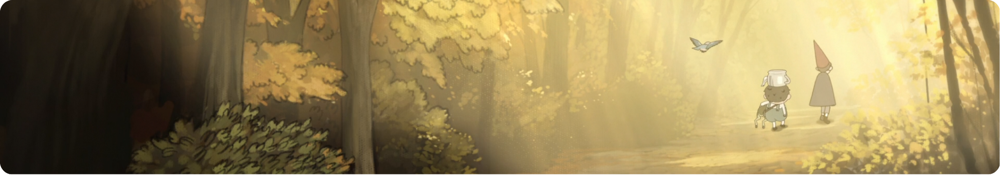

- Patrick McHale
- Pendleton Ward
- Amalia Levari
- Tom Herpich
- Natasha Allegri


Mas alla del jardin es una miniserie animada que te invita a un viaje lleno de misterio y aventura. Esta joya de la animacion, transmitida en Cartoon Network, te sumerge en un bosque raro y magico, conocido como "Lo Desconocido". La serie sigue a dos hermanos, Wirt y Greg, quienes se encuentran perdidos en este bosque misterioso. Con la ayuda de un sombrio hombre que vive tala arboles y una pajaro azul parlante llamada Beatrice, deben encontrar su camino a casa. Pero no todo es lo que parece en este bosque de oscuras connotaciones simbolicas. Es una obra maestra de la animacion, con un estilo unico que combina el cuento infantil con los grabados vintage. Cada episodio te sumerge en un mundo de pesadilla, a medio camino entre la fantasia y la realidad, lleno de personajes excentricos y amenazadores. Con su narrativa rompedora y anarquica, sus personajes inolvidables y su extraordinaria ambientacion, esta serie te mantendra pegado a la pantalla desde el primer hasta el ultimo episodio.
Narra la historia de dos hermanos, Wirt y Greg, que se encuentran perdidos en un bosque extraño y misterioso conocido como Lo Desconocido. Con la ayuda de un sombrío leñador y un pájaro azul llamada Beatriz, Wirt y Greg deben viajar a través de este extraño lugar con la esperanza de regresar a casa.
La historia comienza cuando Wirt, un adolescente taciturno, poco seguro de sí mismo, con mucha preocupación sobre el futuro y su hermano menor, Greg, un niño ingenuo y alegre, se pierden en el bosque durante una noche de Halloween, cayendo en un rio y perdiendo la conciencia. Al despertar, se encuentran en “Lo Desconocido”, un lugar peculiar donde el tiempo parece no tener sentido y habitan criaturas fantásticas. Wirt y Greg se ven obligados a emprender una travesía para encontrar el camino de regreso a casa y a medida que lo intentan, se encuentran con una serie de personajes extraños y enfrentan situaciones inusuales, desafíos y peligros. Uno de los primeros encuentros de los hermanos es con “el leñador”, un hombre que durante toda la serie, trata de ayudar a los niños y les advierte sobre peligros. También se encuentran con un ave parlante llamada Beatríz, quién decide ayudarlos a regresar a su casa tras salvarla de estar atorada en unos arbustos. Juntos, los tres emprenden un viaje lleno de peligros y descubrimientos sorprendentes. A lo largo de su viaje, se enfrentan a criaturas extrañas, como el Lobo, un ser misterioso que acecha en el bosque, y “la Bestia”, una entidad oscura que habita entre las ramas y la penumbra. En su camino, se enfrentan a diversos desafíos y peligros, mientras descubren los secretos del bosque y aprenden valiosas lecciones sobre la hermandad, el coraje, la amistad y la importancia de enfrentar los propios temores.
La serie está llena de momentos emotivos, humor surrealista y una estética visual única que combina elementos de cuentos de hadas clásicos con una narrativa moderna y compleja. "Más allá del Jardín" ha sido aclamada por la crítica y el público por su originalidad, su estilo artístico y su conmovedora historia sobre el crecimiento personal y la búsqueda del hogar.

Wirt es el personaje principal de la serie. Es un adolescente caracterizado principalmente por su sombrero rojo y capa azul, su personalidad resalta por ser un tanto pesimista e infantil en ocasiones. Tambien es el hermano mayor de Greg

Greg es el hermano menor de Wirt, se caracteriza por ser un niño alegre y lleno de energía y curiosidad que ve la vida como una aventura emocionante junto a la rana que tiene como mascota.

Beatrice es un pájaro que habla de color azul, que se une a Wirt y a Greg en su viaje por el bosque. Aunque inicialmente actúa con sus propios intereses en mente, eventualmente se convierte en una aliada valiosa para los hermanos, ayudándolos a superar los peligros del bosque y encontrar su camino a casa.

El Leñador es un personaje misterioso que los hermanos encuentran en el bosque. A primera vista, parece amable y servicial, ofreciendo su ayuda y refugio en su cabaña. Sin embargo, pronto se revela que el Leñador puede tener motivos ocultos y no todo es lo que parece con él.

La Bestia es una presencia oscura y amenazante que acecha en las sombras del bosque. A medida que los hermanos avanzan en su viaje, se encuentran cada vez más confrontados por la presencia de la Bestia, quien parece tener sus propios planes para ellos. Su verdadera naturaleza y propósito son un misterio aterrador que los hermanos deben enfrentar.


Narra las extravagantes, coloridas y divertidas aventuras de un niño llamado Finn y su amigo canino parlante, Jake que se unen para divertirse en la mística Tierra de Ooo.
Se centra en un mundo dividido en cuatro naciones, cada una asociada a un elemento natural: agua, tierra, fuego y aire. El Avatar, capaz de dominar los cuatro elementos, emerge como la figura destinada a mantener el equilibrio en el mundo.


La serie transcurre en un tren bastante extenso que viaja a través de un árido desierto en un universo paralelo. La misión del tren es recoger personas con problemas que no pueden superar. Los vagones del tren contienen una variedad de mundos extraños y fantásticos.